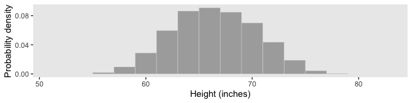
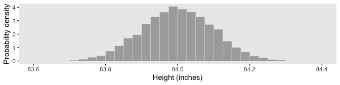
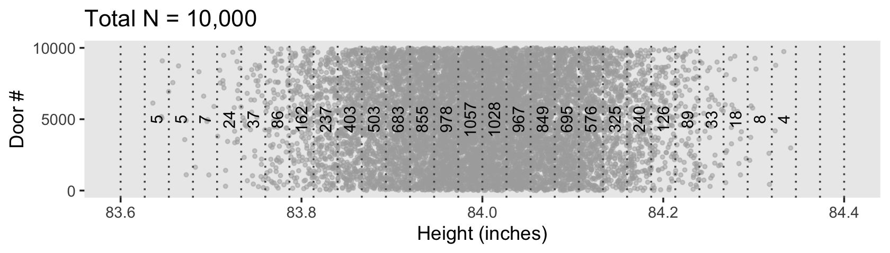
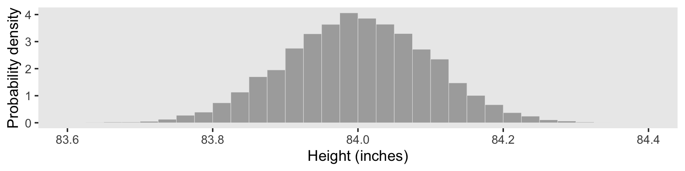

4 What is This Stuff Called Probability?
Inferential statistical techniques assign precise measures to our uncertainty about possibilities. Uncertainty is measured in terms of probability, and therefore we must establish the properties of probability before we can make inferences about it. This chapter introduces the basic ideas of probability. (p. 71, emphasis in the original)
4.1 The set of all possible events
This snip from page 72 is important (emphasis in the original):
Whenever we ask about how likely an outcome is, we always ask with a set of possible outcomes in mind. This set exhausts all possible outcomes, and the outcomes are all mutually exclusive. This set is called the sample space.
4.2 Probability: Outside or inside the head
It’s worthwhile to quote this section in full.
Sometimes we talk about probabilities of outcomes that are “out there” in the world. The face of a flipped coin is such an outcome: We can observe the flip, and the probability of coming up heads can be estimated by observing several flips.
But sometimes we talk about probabilities of things that are not so clearly “out there,” and instead are just possible beliefs “inside the head.” Our belief about the fairness of a coin is an example of something inside the head. The coin may have an intrinsic physical bias, but now I am referring to our belief about the bias. Our beliefs refer to a space of mutually exclusive and exhaustive possibilities. It might be strange to say that we randomly sample from our beliefs, like we randomly sample from a sack of coins. Nevertheless, the mathematical properties of probabilities outside the head and beliefs inside the head are the same in their essentials, as we will see. (pp. 73–74, emphasis in the original)
4.2.1 Outside the head: Long-run relative frequency.
For events outside the head, it’s intuitive to think of probability as being the long-run relative frequency of each possible outcome…
We can determine the long-run relative frequency by two different ways. One way is to approximate it by actually sampling from the space many times and tallying the number of times each event happens. A second way is by deriving it mathematically. These two methods are now explored in turn. (p. 74)
4.2.1.1 Simulating a long-run relative frequency.
Before we try coding the simulation, we’ll first load the tidyverse.
Now run the simulation.
n <- 500 # specify the total number of flips
p_heads <- 0.5 # specify underlying probability of heads
# Kruschke reported this was the seed he used at the top of page 94
set.seed(47405)
# here we use that seed to flip a coin n times and compute the running proportion of heads at each flip.
# we generate a random sample of n flips (heads = 1, tails = 0)
d <-
tibble(flip_sequence = sample(x = c(0, 1),
prob = c(1 - p_heads, p_heads),
size = n,
replace = T),
r = cumsum(flip_sequence),
n = 1:n) %>%
mutate(run_prop = r / n)
end_prop <-
d %>%
select(run_prop) %>%
slice(n()) %>%
round(digits = 3) %>%
pull()Now we’re ready to make Figure 4.1.
d %>%
filter(n < 1000) %>% # this step cuts down on the time it takes to make the plot
ggplot(aes(x = n, y = run_prop)) +
geom_hline(yintercept = .5, color = "white") +
geom_line(color = "grey50") +
geom_point(color = "grey50", alpha = 1/4) +
scale_x_log10(breaks = c(1, 2, 5, 10, 20, 50, 200, 500)) +
coord_cartesian(xlim = 1:500,
ylim = 0:1) +
labs(title = "Running proportion of heads",
subtitle = paste("Our end proportion =", end_prop),
x = "Flip number",
y = "Proportion of heads") +
theme(panel.grid = element_blank())4.2.1.2 Deriving a long-run relative frequency.
Sometimes, when the situation is simple enough mathematically, we can derive the exact long-run relative frequency. The case of the fair coin is one such simple situation. The sample space of the coin consists of two possible outcomes, head and tail. By the assumption of fairness, we know that each outcome is equally likely. Therefore, the long-run relative frequency of heads should be exactly one out of two, i.e., 1/2, and the long-run relative frequency of tails should also be exactly 1/2. (p. 76)
4.2.2 Inside the head: Subjective belief.
To specify our subjective beliefs, we have to specify how likely we think each possible outcome is. It can be hard to pin down mushy intuitive beliefs. In the next section, we explore one way to “calibrate” subjective beliefs, and in the subsequent section we discuss ways to mathematically describe degrees of belief. (p. 76)
4.2.3 Probabilities assign numbers to possibilities.
In general, a probability, whether it’s outside the head or inside the head, is just a way of assigning numbers to a set of mutually exclusive possibilities. The numbers, called “probabilities,” merely need to satisfy three properties (Kolmogorov, 1956):
- A probability value must be nonnegative (i.e., zero or positive).
- The sum of the probabilities across all events in the entire sample space must be 1.0 (i.e., one of the events in the space must happen, otherwise the space does not exhaust all possibilities).
- For any two mutually exclusive events, the probability that one or the other occurs is the sum of their individual probabilities. For example, the probability that a fair six-sided die comes up 3-dots or 4-dots is 1/6 + 1/6 = 2/6.
Any assignment of numbers to events that respects those three properties will also have all the properties of probabilities that we will discuss below. (pp. 77–78, emphasis in the original)
4.3 Probability distributions
“A probability distribution is simply a list of all possible outcomes and their corresponding probabilities” (p. 78, emphasis in the original)
4.3.1 Discrete distributions: Probability mass.
When the sample space consists of discrete outcomes, then we can talk about the probability of each distinct outcome. For example, the sample space of a flipped coin has two discrete outcomes, and we talk about the probability of head or tail…
For continuous outcome spaces, we can discretize the space into a finite set of mutually exclusive and exhaustive “bins.” (p. 78, emphasis in the original)
In order to recreate Figure 4.2, we need to generate the heights data. In his HtWtDataDenerator.R script, Kruschke provided the code for a function that will generate height data of the kind in his text. Here is the code:
HtWtDataGenerator <- function(n_subj, rndsd = NULL, male_prob = 0.50) {
# Random height, weight generator for males and females. Uses parameters from
# Brainard, J. & Burmaster, D. E. (1992). Bivariate distributions for height and
# weight of men and women in the United States. Risk Analysis, 12(2), 267-275.
# Kruschke, J. K. (2011). Doing Bayesian data analysis:
# A Tutorial with R and BUGS. Academic Press / Elsevier.
# Kruschke, J. K. (2014). Doing Bayesian data analysis, 2nd Edition:
# A Tutorial with R, JAGS and Stan. Academic Press / Elsevier.
# require(MASS)
# Specify parameters of multivariate normal (MVN) distributions.
# Men:
HtMmu <- 69.18
HtMsd <- 2.87
lnWtMmu <- 5.14
lnWtMsd <- 0.17
Mrho <- 0.42
Mmean <- c(HtMmu, lnWtMmu)
Msigma <- matrix(c(HtMsd^2, Mrho * HtMsd * lnWtMsd,
Mrho * HtMsd * lnWtMsd, lnWtMsd^2), nrow = 2)
# Women cluster 1:
HtFmu1 <- 63.11
HtFsd1 <- 2.76
lnWtFmu1 <- 5.06
lnWtFsd1 <- 0.24
Frho1 <- 0.41
prop1 <- 0.46
Fmean1 <- c(HtFmu1, lnWtFmu1)
Fsigma1 <- matrix(c(HtFsd1^2, Frho1 * HtFsd1 * lnWtFsd1,
Frho1 * HtFsd1 * lnWtFsd1, lnWtFsd1^2), nrow = 2)
# Women cluster 2:
HtFmu2 <- 64.36
HtFsd2 <- 2.49
lnWtFmu2 <- 4.86
lnWtFsd2 <- 0.14
Frho2 <- 0.44
prop2 <- 1 - prop1
Fmean2 <- c(HtFmu2, lnWtFmu2)
Fsigma2 <- matrix(c(HtFsd2^2, Frho2 * HtFsd2 * lnWtFsd2,
Frho2 * HtFsd2 * lnWtFsd2, lnWtFsd2^2), nrow = 2)
# Randomly generate data values from those MVN distributions.
if (!is.null(rndsd)) {set.seed(rndsd)}
data_matrix <- matrix(0, nrow = n_subj, ncol = 3)
colnames(data_matrix) <- c("male", "height", "weight")
maleval <- 1; femaleval <- 0 # arbitrary coding values
for (i in 1:n_subj) {
# Flip coin to decide sex
sex = sample(c(maleval, femaleval), size = 1, replace = TRUE,
prob = c(male_prob, 1 - male_prob))
if (sex == maleval) {datum <- MASS::mvrnorm(n = 1, mu = Mmean, Sigma = Msigma)}
if (sex == femaleval) {
Fclust = sample(c(1, 2), size = 1, replace = TRUE, prob = c(prop1, prop2))
if (Fclust == 1) {datum <- MASS::mvrnorm(n = 1, mu = Fmean1, Sigma = Fsigma1)}
if (Fclust == 2) {datum <- MASS::mvrnorm(n = 1, mu = Fmean2, Sigma = Fsigma2)}
}
data_matrix[i, ] = c(sex, round(c(datum[1], exp(datum[2])), 1))
}
return(data_matrix)
} # end functionNow we have the HtWtDataGenerator() function, all we need to do is determine how many values are generated and how probable we want the values to be based on those from men. These are controlled by the n_subj and male_prob parameters.
set.seed(4)
d <-
HtWtDataGenerator(n_subj = 10000, male_prob = .5) %>%
as_tibble() %>%
mutate(person = 1:n())
d %>%
head()## # A tibble: 6 x 4
## male height weight person
## <dbl> <dbl> <dbl> <int>
## 1 1 76 222. 1
## 2 0 59.5 190 2
## 3 0 60.2 118. 3
## 4 1 64.1 138. 4
## 5 1 69.3 148. 5
## 6 1 69.1 166. 6For Figure 4.2, we’ll make extensive use of the case_when() syntax, which you can learn more about from hrbrmstr’s Making a Case for case_when.
d_bin <-
d %>%
mutate(bin = case_when(
height < 51 ~ 51,
between(height, 51, 53) ~ 53,
between(height, 53, 55) ~ 55,
between(height, 55, 57) ~ 57,
between(height, 57, 59) ~ 59,
between(height, 59, 61) ~ 61,
between(height, 61, 63) ~ 63,
between(height, 63, 65) ~ 65,
between(height, 65, 67) ~ 67,
between(height, 67, 69) ~ 69,
between(height, 69, 71) ~ 71,
between(height, 71, 73) ~ 73,
between(height, 73, 75) ~ 75,
between(height, 75, 77) ~ 77,
between(height, 77, 79) ~ 79,
between(height, 79, 81) ~ 71,
between(height, 81, 83) ~ 83,
height > 83 ~ 85)
) %>%
group_by(bin) %>%
summarise(n = n()) %>%
mutate(height = bin - 1)
d %>%
ggplot(aes(x = height, y = person)) +
geom_point(size = 3/4, color = "grey67", alpha = 1/2) +
geom_vline(xintercept = seq(from = 51, to = 83, by = 2),
linetype = 3, color = "grey33") +
geom_text(data = d_bin,
aes(y = 5000, label = n),
size = 3.25) +
scale_y_continuous(breaks = c(0, 5000, 10000)) +
labs(title = "Total N = 10,000",
x = "Height (inches)",
y = "Person #") +
theme(panel.grid = element_blank())
Because we’re simulating and we don’t know what seed number Kruschke used for his plot, ours will differ a little from his. But the overall pattern is the same.
It’s a little less work to make Figure 4.2.b.
d %>%
ggplot(aes(x = height)) +
geom_histogram(aes(y = stat(density)),
binwidth = 2, fill = "grey67",
color = "grey92", size = 1/8) +
scale_y_continuous(breaks = c(0, .04, .08)) +
coord_cartesian(xlim = 51:83) +
labs(x = "Height (inches)",
y = "Probability density") +
theme(panel.grid = element_blank())
Our data binning approach for Figure 4.2.c will be a little different than what we did, above. Here we’ll make our bins with the round() function.
d_bin <-
d %>%
mutate(bin = round(height, digits = 0)) %>%
group_by(bin) %>%
summarise(n = n()) %>%
mutate(height = bin - 0.5)
d %>%
ggplot(aes(x = height, y = person)) +
geom_point(size = 3/4, color = "grey67", alpha = 1/2) +
geom_vline(xintercept = seq(from = 51, to = 83, by = 1),
linetype = 3, color = "grey33") +
geom_text(data = d_bin,
aes(y = 5000, label = n, angle = 90),
size = 3.25) +
scale_y_continuous(breaks = c(0, 5000, 10000)) +
labs(title = "Total N = 10,000",
x = "Height (inches)",
y = "Person #") +
theme(panel.grid = element_blank())
However, our method for Figure 4.2.d will be like what we did, before.
d %>%
ggplot(aes(x = height)) +
geom_histogram(aes(y = stat(density)), boundary = 0,
binwidth = 1, fill = "grey67",
color = "grey92", size = 1/8) +
scale_y_continuous(breaks = c(0, .04, .08)) +
coord_cartesian(xlim = 51:83) +
labs(x = "Height (inches)",
y = "Probability density") +
theme(panel.grid = element_blank())The probability of a discrete outcome, such as the probability of falling into an interval on a continuous scale, is referred to as a probability mass. Loosely speaking, the term “mass” refers the amount of stuff in an object. When the stuff is probability and the object is an interval of a scale, then the mass is the proportion of the outcomes in the interval. (p. 80, emphasis in the original)
4.3.2 Continuous distributions: Rendezvous with density.
If you think carefully about a continuous outcome space, you realize that it becomes problematic to talk about the probability of a specific value on the continuum, as opposed to an interval on the continuum… Therefore, what we will do is make the intervals infinitesimally narrow, and instead of talking about the infinitesimal probability mass of each infinitesimal interval, we will talk about the ratio of the probability mass to the interval width. That ratio is called the probability density.
Loosely speaking, density is the amount of stuff per unit of space it takes up. Because we are measuring amount of stuff by its mass, then density is the mass divided by the amount space it occupies. (p. 80, emphasis in the original)
To make Figure 4.3, we’ll need new data.
set.seed(4)
d <-
tibble(height = rnorm(1e4, mean = 84, sd = .1)) %>%
mutate(door = 1:n())
d %>%
head()## # A tibble: 6 x 2
## height door
## <dbl> <int>
## 1 84.0 1
## 2 83.9 2
## 3 84.1 3
## 4 84.1 4
## 5 84.2 5
## 6 84.1 6To make the bins for our version of Figure 4.3.a, we could use the case_when() approach from above. However, that would require some tedious code. Happily, we have an alternative in the santoku package, which I learned about with help from the great Tyson Barrett, Omar Wasow, and Mara Averick. We can use the santoku::chop() function to discretize our height values. Here we’ll walk through the first part.
# devtools::install_github("hughjonesd/santoku")
library(santoku)
d_bin <-
d %>%
mutate(bin = chop(height,
breaks = seq(from = 83.6, to = 84.4, length.out = 31),
labels = seq(from = 83.6, to = 84.4, length.out = 31)[-1]))
head(d_bin)## # A tibble: 6 x 3
## height door bin
## <dbl> <int> <fct>
## 1 84.0 1 84.0266666666667
## 2 83.9 2 83.9466666666667
## 3 84.1 3 84.1066666666667
## 4 84.1 4 84.08
## 5 84.2 5 84.1866666666667
## 6 84.1 6 84.08We’ve labeled our bin levels by their upper bounds. Note how they are saved as factors. To make use of those values in our plot, we’ll need to convert them to numerals. Here we make that conversion and complete the data wrangling.
d_bin <-
d_bin %>%
mutate(bin = as.character(bin) %>% as.double()) %>%
group_by(bin) %>%
summarise(n = n()) %>%
mutate(height = bin - (83.62667 - 83.6) / 2)
head(d_bin)## # A tibble: 6 x 3
## bin n height
## <dbl> <int> <dbl>
## 1 83.7 5 83.6
## 2 83.7 5 83.7
## 3 83.7 7 83.7
## 4 83.7 24 83.7
## 5 83.8 37 83.7
## 6 83.8 86 83.8Now we plot.
d %>%
ggplot(aes(x = height, y = door)) +
geom_point(size = 3/4, color = "grey67", alpha = 1/2) +
geom_vline(xintercept = seq(from = 83.6, to = 84.4, length.out = 31),
linetype = 3, color = "grey33") +
geom_text(data = d_bin,
aes(y = 5000, label = n, angle = 90),
size = 3.25) +
scale_y_continuous(breaks = c(0, 5000, 10000)) +
labs(title = "Total N = 10,000",
x = "Height (inches)",
y = "Door #") +
theme(panel.grid = element_blank())
Figure 4.3.b is a breeze.
d %>%
ggplot(aes(x = height)) +
geom_histogram(aes(y = stat(density)), boundary = 0,
binwidth = .025, fill = "grey67",
color = "grey92", size = 1/8) +
scale_y_continuous(breaks = 0:4) +
coord_cartesian(xlim = c(83.6, 84.4)) +
labs(x = "Height (inches)",
y = "Probability density") +
theme(panel.grid = element_blank())
4.3.2.1 Properties of probability density functions.
4.3.2.2 The normal probability density function.
We’ll use dnorm() again to make our version of Figure 4.4.
tibble(x = seq(from = -.8, to = .8, by = .02)) %>%
mutate(p = dnorm(x, mean = 0, sd = .2)) %>%
ggplot(aes(x = x)) +
geom_line(aes(y = p),
color = "grey50", size = 1.25) +
geom_linerange(aes(ymin = 0, ymax = p),
size = 1/3) +
coord_cartesian(xlim = c(-.61, .61)) +
labs(title = "Normal probability density",
subtitle = expression(paste(mu, " = 0 and ", sigma, " = 0.2")),
y = "p(x)") +
theme(panel.grid = element_blank())
The equation for the normal probability density follows the form
\[ p(x) = \frac{1}{\sigma \sqrt{2 \pi}} \exp \Bigg ( - \frac{1}{2} \bigg [ \frac{x - \mu}{\sigma}^2 \bigg ] \Bigg ), \]
where \(\mu\) governs the mean and \(\sigma\) governs the standard deviation.
4.3.3 Mean and variance of a distribution.
The mean of a probability distribution is also called the expected value, which follow the form
\[E[x] = \sum_x p(x) x\]
when \(x\) is discrete. For continuous \(x\) values, the formula is
\[E[x] = \int \text d x \; p(x) x.\]
The variance is defined as the mean squared deviation from the mean,
\[\text{var}_x = \int \text d x \; p(x) (x - E[x])^2.\]
If you take the square root of the variance, you get the standard deviation.
4.3.4 Highest density interval (HDI).
The HDI indicates which points of a distribution are most credible, and which cover most of the distribution. Thus, the HDI summarizes the distribution by specifying an interval that spans most of the distribution, say 95% of it, such that every point inside the interval has higher credibility than any point outside the interval. (p. 87)
In Chapter 10 (p. 294), Kruschke briefly mentions his HDIofICDF() function, the code for which you can find in his DBDA2E-utilities.R file. It’s a handy function which we’ll put to use from time to time. Here’s a mild reworking of his code.
hdi_of_icdf <- function(name, width = .95, tol = 1e-8, ... ) {
# Arguments:
# `name` is R's name for the inverse cumulative density function
# of the distribution.
# `width` is the desired mass of the HDI region.
# `tol` is passed to R's optimize function.
# Return value:
# Highest density iterval (HDI) limits in a vector.
# Example of use: For determining HDI of a beta(30, 12) distribution, type
# `hdi_of_icdf(qbeta, shape1 = 30, shape2 = 12)`
# Notice that the parameters of the `name` must be explicitly stated;
# e.g., `hdi_of_icdf(qbeta, 30, 12)` does not work.
# Adapted and corrected from Greg Snow's TeachingDemos package.
incredible_mass <- 1.0 - width
interval_width <- function(low_tail_prob, name, width, ...) {
name(width + low_tail_prob, ...) - name(low_tail_prob, ...)
}
opt_info <- optimize(interval_width, c(0, incredible_mass),
name = name, width = width,
tol = tol, ...)
hdi_lower_tail_prob <- opt_info$minimum
return(c(name(hdi_lower_tail_prob, ...),
name(width + hdi_lower_tail_prob, ...)))
}Now we already know from the text, and perhaps from prior experience, what the 95% HDIs for the unit normal. But it’s nice to be able to confirm that with a function.
## [1] -1.959964 1.959964Now we’ve saved those values in h, we can use then to make our version of Figure 4.5.a.
tibble(x = seq(from = -3.5, to = 3.5, by = .05)) %>%
ggplot(aes(x = x)) +
geom_ribbon(aes(ymin = 0,
ymax = dnorm(x, mean = 0, sd = 1)),
fill = "grey75") +
geom_ribbon(data = . %>% filter(x >=h[1] & x <= h[2]),
aes(ymin = 0,
ymax = dnorm(x, mean = 0, sd = 1)),
fill = "grey50") +
geom_line(data = tibble(x = c(h[1] + .02, h[2] - .02),
y = c(.059, .059)),
aes(y = y),
arrow = arrow(length = unit(.2, "cm"),
ends = "both",
type = "closed"),
color = "grey92") +
annotate("text", x = 0, y = .09,
label = "95% HDI", color = "grey92") +
xlim(-3.1, 3.1) +
labs(y = "p(x)") +
theme(panel.grid = element_blank())
As far as I could tell, Figure 4.5.b is of a beta distribution, which Kruschke covers in greater detail starting in Chapter 6. I got the shape1 and shape2 values from playing around. If you have a more principled approach, do share. But anyway, we can use our hdi_of_icdf() funciton to ge the correct values.
## [1] 0.6103498 0.9507510Let’s put those h values to work.
tibble(x = seq(from = 0, to = 1, by = .01)) %>%
ggplot(aes(x = x)) +
geom_ribbon(aes(ymin = 0,
ymax = dbeta(x, shape1 = 15, shape2 = 4)),
fill = "grey75") +
geom_ribbon(data = . %>% filter(x >=h[1] & x <= h[2]),
aes(ymin = 0,
ymax = dbeta(x, shape1 = 15, shape2 = 4)),
fill = "grey50") +
geom_line(data = tibble(x = c(h[1] + .01, h[2] - .002),
y = c(.75, .75)),
aes(x = x, y = y),
arrow = arrow(length = unit(.2, "cm"),
ends = "both",
type = "closed"),
color = "grey92") +
annotate("text", x = .8, y = 1.1,
label = "95% HDI", color = "grey92") +
xlim(.4, 1) +
ylab("p(x)") +
theme(panel.grid = element_blank())
Figure 4.5.c was also a lot of trial and error. It seemed the easiest way to reproduce the shape was to mash two Gaussians together. After playing around with rnorm(), I ended up with this.
set.seed(4)
d <-
tibble(x = c(rnorm(6e5, mean = 1.50, sd = .5),
rnorm(4e5, mean = 4.75, sd = .5)))
glimpse(d)## Observations: 1,000,000
## Variables: 1
## $ x <dbl> 1.6083774, 1.2287537, 1.9455723, 1.7979903, 2.3178090, 1.8446377, 0…As you’ll see, it’s not exactly right. But it’s close enough to give you a sense of what’s going on. But anyway, since we’re working with simulated data rather than an analytic solution, we’ll want to use a powerful convenience function from the tidybayes package.
Kay’s tidybayes package
provides a family of functions for generating point summaries and intervals from draws in a tidy format. These functions follow the naming scheme
[median|mean|mode]_[qi|hdi], for example,median_qi,mean_qi,mode_hdi, and so on. The first name (before the_) indicates the type of point summary, and the second name indicates the type of interval.qiyields a quantile interval (a.k.a. equi-tailed interval, central interval, or percentile interval) andhdiyields a highest (posterior) density interval. (from here)
Here we’ll use mode_hdi() to compute the HDIs and put them in a tibble. We’ll be using a lot of mode_hdi() in this project.
## # A tibble: 2 x 6
## x .lower .upper .width .point .interval
## <dbl> <dbl> <dbl> <dbl> <chr> <chr>
## 1 1.50 0.458 2.55 0.95 mode hdi
## 2 1.50 3.82 5.68 0.95 mode hdiUsually, mode_hdi() will return a tibble with just one row. But in this case, since we had a bimodal distribution, it returned two rows—one for each of the two distinct regions. Oh, and in case it wasn’t clear, that first column x is the measure of central tendency—the mode, in this case. Though I acknowledge, it’s a little odd to speak of central tendency in a bimodal distribution. Again, this won’t happen much.
In order to fill the bimodal density with the split HDIs, you need to use the density() function to transform the d data to a tibble with the values for the x-axis in an x vector and the corresponding density values in a y vector.
## # A tibble: 6 x 2
## x y
## <dbl> <dbl>
## 1 -1.11 0.0000000503
## 2 -1.09 0.0000000822
## 3 -1.08 0.000000131
## 4 -1.06 0.000000201
## 5 -1.04 0.000000304
## 6 -1.03 0.000000449We’re finally ready to plot. Forgive me. It’s a monster.
ggplot(data = dens,
aes(x = x, y = y)) +
geom_ribbon(aes(ymin = 0, ymax = y),
size = 0, fill = "grey75") +
# note the use of `pull()`, which extracts the values, rather than return a tibble
geom_ribbon(data = dens %>% filter(x > h[1, 2] %>% pull() &
x < h[1, 3] %>% pull()),
aes(ymin = 0, ymax = y),
size = 0, fill = "grey50") +
geom_ribbon(data = dens %>% filter(x > h[2, 2] %>% pull() &
x < h[2, 3] %>% pull()),
aes(ymin = 0, ymax = y),
size = 0, fill = "grey50") +
geom_line(data = tibble(x = c(h[1, 2] %>% pull(), h[1, 3] %>% pull()),
y = c(.06, .06)),
aes(x = x, y = y),
arrow = arrow(length = unit(.2,"cm"),
ends = "both",
type = "closed"),
color = "grey92") +
geom_line(data = tibble(x = c(h[2, 2] %>% pull(), h[2, 3] %>% pull()),
y = c(.06, .06)),
aes(x = x, y = y),
arrow = arrow(length = unit(.2,"cm"),
ends = "both",
type = "closed"),
color = "grey92") +
annotate("text", x = 1.5, y = .1,
label = "95% HDI", color = "grey92") +
annotate("text", x = 4.75, y = .1,
label = "95% HDI", color = "grey92") +
scale_x_continuous(breaks = 0:6, limits = c(0, 6.3)) +
scale_y_continuous("p(x)", breaks = c(0, .1, .2, .3, .4, .5)) +
theme(panel.grid = element_blank())
4.4 Two-way distributions
Here’s a way to compute the marginals from the inner cells of Table 4.1.
d1 <-
tibble(eye_color = c("brown", "blue", "hazel", "green"),
black = c(.11, .03, .03, .01),
brunette = c(.2, .14, .09, .05),
red = c(.04, .03, .02, .02),
blond = c(.01, .16, .02, .03)) %>%
mutate(marginal_eye_color = black + brunette + red + blond)
d2 <-
d1 %>%
summarise_if(is.double, sum) %>%
mutate(eye_color = "marginal_hair_color") %>%
select(eye_color, everything())
bind_rows(d1, d2)## # A tibble: 5 x 6
## eye_color black brunette red blond marginal_eye_color
## <chr> <dbl> <dbl> <dbl> <dbl> <dbl>
## 1 brown 0.11 0.2 0.04 0.01 0.36
## 2 blue 0.03 0.14 0.03 0.16 0.36
## 3 hazel 0.03 0.09 0.02 0.02 0.160
## 4 green 0.01 0.05 0.02 0.03 0.11
## 5 marginal_hair_color 0.18 0.48 0.11 0.22 0.99Session info
## R version 3.6.2 (2019-12-12)
## Platform: x86_64-apple-darwin15.6.0 (64-bit)
## Running under: macOS High Sierra 10.13.6
##
## Matrix products: default
## BLAS: /Library/Frameworks/R.framework/Versions/3.6/Resources/lib/libRblas.0.dylib
## LAPACK: /Library/Frameworks/R.framework/Versions/3.6/Resources/lib/libRlapack.dylib
##
## locale:
## [1] en_US.UTF-8/en_US.UTF-8/en_US.UTF-8/C/en_US.UTF-8/en_US.UTF-8
##
## attached base packages:
## [1] stats graphics grDevices utils datasets methods base
##
## other attached packages:
## [1] tidybayes_1.1.0 forcats_0.4.0 stringr_1.4.0 dplyr_0.8.3
## [5] purrr_0.3.3 readr_1.3.1 tidyr_1.0.0 tibble_2.1.3
## [9] ggplot2_3.2.1 tidyverse_1.3.0
##
## loaded via a namespace (and not attached):
## [1] Rcpp_1.0.3 lubridate_1.7.4
## [3] santoku_0.3.0 lattice_0.20-38
## [5] assertthat_0.2.1 zeallot_0.1.0
## [7] digest_0.6.23 utf8_1.1.4
## [9] plyr_1.8.5 R6_2.4.1
## [11] cellranger_1.1.0 backports_1.1.5
## [13] HDInterval_0.2.0 reprex_0.3.0
## [15] evaluate_0.14 coda_0.19-3
## [17] ggstance_0.3.3 httr_1.4.1
## [19] pillar_1.4.3 rlang_0.4.2
## [21] lazyeval_0.2.2 readxl_1.3.1
## [23] rstudioapi_0.10 rmarkdown_2.0
## [25] labeling_0.3 munsell_0.5.0
## [27] broom_0.5.3 compiler_3.6.2
## [29] modelr_0.1.5 xfun_0.12
## [31] pkgconfig_2.0.3 htmltools_0.4.0
## [33] tidyselect_0.2.5 arrayhelpers_1.0-20160527
## [35] fansi_0.4.1 crayon_1.3.4
## [37] dbplyr_1.4.2 withr_2.1.2
## [39] MASS_7.3-51.4 grid_3.6.2
## [41] nlme_3.1-142 jsonlite_1.6
## [43] gtable_0.3.0 lifecycle_0.1.0
## [45] DBI_1.1.0 pacman_0.5.1
## [47] magrittr_1.5 scales_1.1.0
## [49] cli_2.0.1 stringi_1.4.5
## [51] farver_2.0.3 fs_1.3.1
## [53] xml2_1.2.2 generics_0.0.2
## [55] vctrs_0.2.1 tools_3.6.2
## [57] svUnit_0.7-12 glue_1.3.1
## [59] hms_0.5.3 yaml_2.2.0
## [61] colorspace_1.4-1 rvest_0.3.5
## [63] knitr_1.26 haven_2.2.0